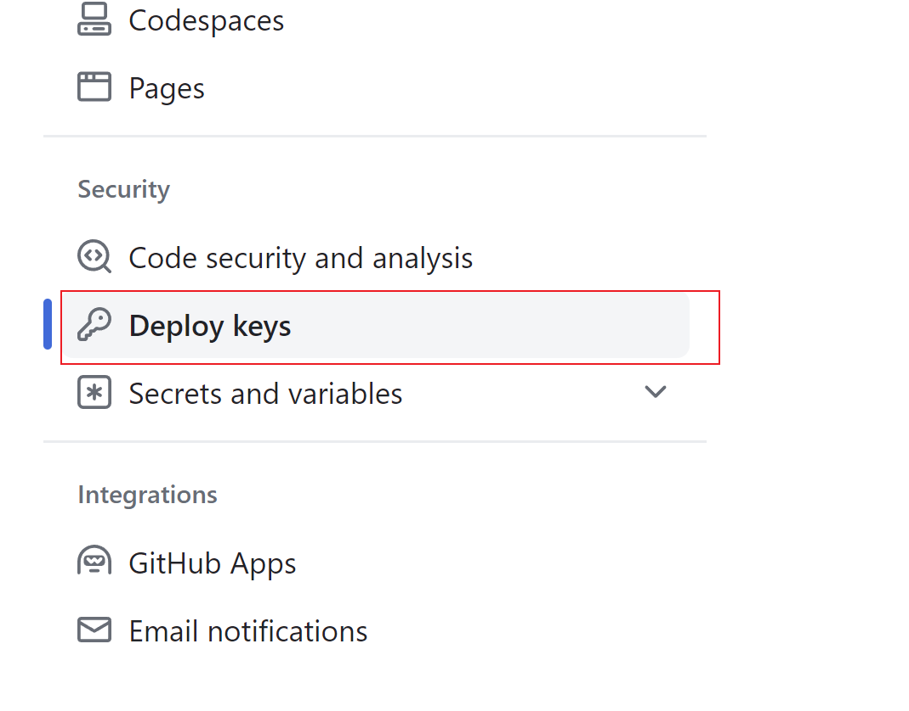

最近重构了下网站，把网站从腾讯云移到了 Github，在 Github 上，通过 Github Actions 实现网站的自动部署。
我重新写了个网站生成器（site-generator），能将指定文件夹下的 markdown 文件转换为静态的 html 文件。
然后将生成的 html 页面部署到 Github Page 中 即可。
使用 Github Actions 可以自动化这一过程。通过 Github Actions 你可以在对 Github 特定 repo 做出某个更新时，自动执行一些特定的任务，例如我想在 site-generator 仓库中的 main 分支提交了代码时，Github 能为我自动执行打包部署命令。
我可以这么做，达到我的目的，首先创建 .github/deploy.yml：
name: deploy
on:
push:
branches:
- main
jobs:
deploy-to-github-page:
# 指定 Github Action 运行环境
runs-on: ubuntu-latest
steps:
# 执行 step：安装依赖
- name: Install dependencies
run: npm i # 要执行的命令
# 执行 step: 打包和部署
- name: Build And Deploy
run: | # 需要执行的多行命令
npm run build
npm run deploy
将 .github/deploy.yml 提交到 github repo 后，github action 会自动执行。Github Action 具体细节这里不做赘述，感兴趣的可以阅读官方文档。
我想在 Github Action 中做以下几件事：
1. 用 site-generator 将 markdown 文件转换成静态 html 页面
2. 将生成的 html 页面 push 到 site 仓库，site 仓库开启了 Github Pages 功能，可以通过浏览器访问
但是我在做第二件事时，遇到了困难，当我执行 git push 命令时，Action 报错了，提示我没有权限，无法访问（unable to access...）。
查阅了一些资料，终于找到了解决问题的方式。
$ ssh-keygen -t ed25519 -C "your_email@example.com"
-t ed25519 是 github 官方推荐使用的选项。
ssh-keygen 命令会提示生成密钥文件的路径名称，建议取一个比较容易记得名称，例如 id_github_repo_site。
命令结束后会生成两个文件私钥 id_github_repo_site 和公钥 id_github_repo_site.pub。
我需要在 site-generator 仓库中将文件 push 到 site 仓库中，那么我需要把公钥添加到 site 仓库中（即目标仓库），将私钥添加到 site-generator 仓库中。
在 site-generator 仓库的 settings 面板中找到 Secrets and variables/Actions，然后添加一个 KEY，内容为刚刚生成的私钥文件内容。名称也是任意，但是需要记住，等会需要用到。
在 site 仓库的 settings 面板中找到 Deploy Keys，然后添加一个 DEPLOY KEY，内容为刚刚生成的公钥文件内容，名称随意，建议取一个比较好记的名称。

在 Github Action 中通过 ${{secrets.REPO_SITE}} 引用刚刚添加的密钥进行身份验证，REPO_SITE 为刚刚添加到 site 仓库的 key 名称。
- name: Push to site
uses: cpina/github-action-push-to-another-repository@main
env:
SSH_DEPLOY_KEY: ${{secrets.REPO_SITE}}
...
（完）